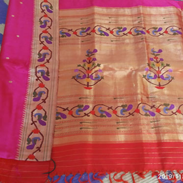
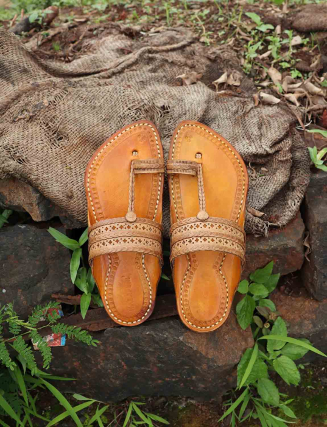

Paithani Sarees
Origin: Paithan, Aurangabad District, Maharashtra
Description: Paithani sarees are handwoven silk sarees known for their rich colors, intricate designs, and gold zari work. They are considered one of the finest sarees in India.
Characteristics: Peacock and lotus motifs, oblique square design, pure silk with gold threads.
GI Tag Year: 2010
Kolhapuri Chappal
Origin: Kolhapur, Maharashtra
Description: Kolhapuri chappals are traditional handcrafted leather footwear known for their comfort, durability, and distinctive design made from vegetable-tanned leather.
Features: Open-toe design, T-strap, made from buffalo hide, comfortable sole.
GI Tag Year: 2019
Nashik Grapes
Origin: Nashik District, Maharashtra
Description: Nashik grapes are known for their sweetness, juiciness, and are used for both table consumption and wine production. The region's climate is ideal for grape cultivation.
Varieties: Thompson Seedless, Bangalore Blue, Anab-e-Shahi.
GI Tag Year: 2013
Warli Paintings
Origin: Thane and Nashik Districts, Maharashtra
Description: Warli paintings are tribal folk art characterized by simple geometric shapes depicting daily life, nature, and social events of the Warli tribe.
Style: White pigment on mud walls, stick figures, geometric patterns.
GI Tag Year: 2010